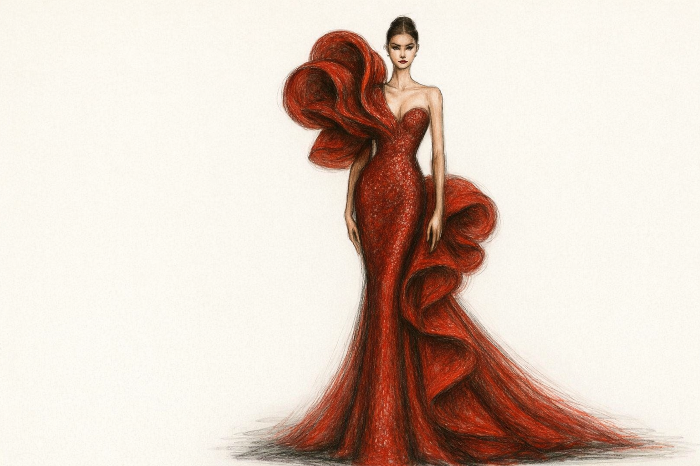

Colecția XS
Siluete fine, linii delicate și rochii care urmăresc grațios corpul, pentru apariții feminine și rafinate.
Descoperă colecția XSRochii care spun o poveste.
Atelier de rochii de gală și rochii de mireasă, creat pentru femei care iubesc eleganța, feminitatea și detaliile fine.
Vezi colecțiile
La Anne L’Or, fiecare rochie este gândită să îți pună în valoare povestea. De la rochii de gală spectaculoase, până la rochii de mireasă atemporale, fiecare creație îmbină linii feminine, texturi luxoase și un rafinament discret.
Selecție atentă de rochii cu design deosebit, pentru apariții memorabile la fiecare eveniment.
Ajustări și personalizări astfel încât rochia să ți se potrivească perfect, ca o a doua piele.
Materiale luxoase, croiuri elegante și finisaje fine, gândite pentru un efect irezistibil.
Alege rochia ideală exact așa cum ai nevoie: de vânzare, de închiriat sau creată special pentru tine.
Descoperă colecțiile gândite pentru diferite tipuri de siluetă, astfel încât să găsești rochia care ți se potrivește natural și elegant.
Siluete fine, linii delicate și rochii care urmăresc grațios corpul, pentru apariții feminine și rafinate.
Descoperă colecția XSSiluete fine, linii delicate și rochii care urmăresc grațios corpul, pentru apariții feminine și rafinate.
Descoperă colecția SEchilibru perfect între confort și eleganță, cu rochii care conturează frumos talia și evidențiază feminitatea.
Descoperă colecția MEchilibru perfect între confort și eleganță, cu rochii care conturează frumos talia și evidențiază feminitatea.
Descoperă colecția LCroieli care valorifică armonios formele, punând accent pe confort, siguranță de sine și eleganță atemporală.
Descoperă colecția XLCroieli care valorifică armonios formele, punând accent pe confort, siguranță de sine și eleganță atemporală.
Descoperă colecția 2XLTe așteptăm în showroom-ul Anne L’Or pentru a proba rochii, a discuta despre evenimentul tău și a găsi împreună silueta perfectă.